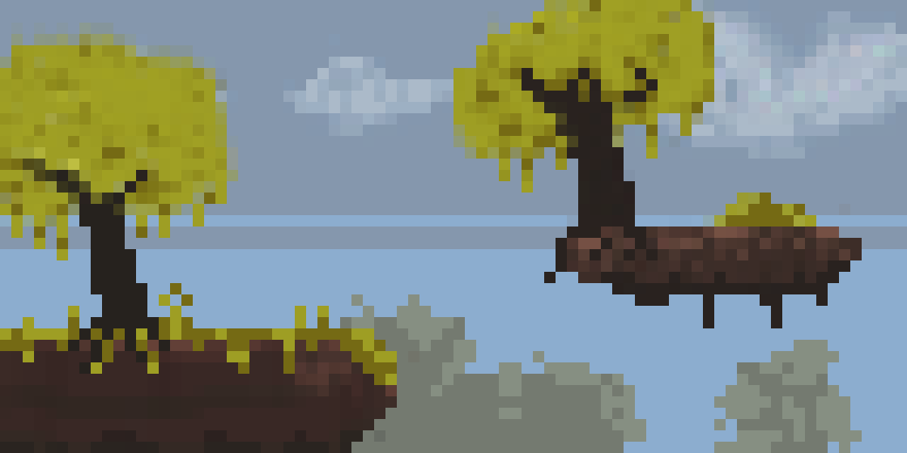

22.04.15_71723fe7.jpg)
Minhas habilidades
Artes
Programação & Linguagem de hipertexto
A minha principal habilidade é desenhar, tendo mais de 2 anos de experiência, tanto no papel quanto no digital, além de alguns projetos de animação em progresso.
Já fiz vários programas e sites usando javascript, HTML, CSS e tailwind, tendo 2 anos de experiência.
Formação

Em andamento
Sou formado no curso de operador de computador da FIC.
tenho certificado do curso de pixelart da Nova Informática.
No momento, estou compeletando o primeiro ano do ensino médio do IF e cursando na Nova Informática com game dev.
Meus projetos

Em Nova Informática, realizei artes conceituais como parte de um projeto de gamejam, com o jogo acima tendo o nome de "climber".

Outro projeto feito na Nova Informática, desta vez sendo um conceito para um jogo metroidvania.